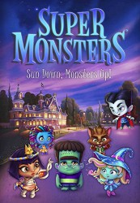

")
Alternativ: Super Monsters (Originaltitel)
 
 IMDB-Wertung: 6.8 / 10
IMDB-Wertung: 6.8 / 10  Metascore:
Metascore: 
Preschool kids whose parents are the world's most famous monsters try to master their special powers while preparing for kindergarten.
Jahr: 2017
Dauer: undefiniert Minuten
FSK:
Land: Studio: 41 EntertainmentTonspuren: - , - , - , - , - ,
Untertitel: Deutsch, Englisch,
Auflösung: 720p (1280x720) Größe: 619 MB
Genre: Horror, Komödie, Animation/Trick, Familie, TV-Serie
Regisseur: Sylvain Blais, Jimmy Tu, Dustin Mckenzie
Drehbuch: Avi Arad, Kaaren Lee Brown, Noelle Wright, Robert N. Skir, Kati Rocky
Soundtrack:
Darsteller:
 Franciska Friede als Zoe Walker, 39 episodes, 2017-2019
Franciska Friede als Zoe Walker, 39 episodes, 2017-2019 Alessandro Juliani als Lobo Howler, 33 episodes, 2017-2018
Alessandro Juliani als Lobo Howler, 33 episodes, 2017-2018 Vincent Tong als Drac, 33 episodes, 2017-2018
Vincent Tong als Drac, 33 episodes, 2017-2018 Andrea Libman als Katya, 33 episodes, 2017-2018
Andrea Libman als Katya, 33 episodes, 2017-2018 Britt McKillip als Esmie, 33 episodes, 2017-2018
Britt McKillip als Esmie, 33 episodes, 2017-2018 Ian James Corlett als Igor, 32 episodes, 2017-2018
Ian James Corlett als Igor, 32 episodes, 2017-2018 Brian Drummond als Frankie's Dad, 32 episodes, 2017-2018
Brian Drummond als Frankie's Dad, 32 episodes, 2017-2018 Nicole Oliver als Cleo's Mom, 32 episodes, 2017-2018
Nicole Oliver als Cleo's Mom, 32 episodes, 2017-2018 Kathleen Barr als Glorb, 32 episodes, 2017-2018
Kathleen Barr als Glorb, 32 episodes, 2017-2018Datei: X:\Kinder Serien\Supermonster\Supermonster S01\Supermonster S01E01.mkv seit 11.10.2018
Festplatte: Kinder-Filme+Trick
 Es gibt insgesamt 56 Filme in der Gruppe 'Kinder Serien'
Es gibt insgesamt 56 Filme in der Gruppe 'Kinder Serien'